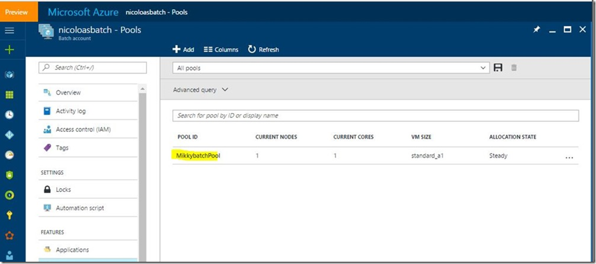

Recently I had an ask from a developer to check Azure Powershell Command let>
New-AzureBatchPool script execution issue. He wanted to specify the VNet details as a parameter to this command so that the batch pool nodes would created with this detail. Unfortunately, we did not have any sample to refer or validate parameter. We spent quite amount of time tweaking the parameter to see the effect but no luck. Lately found a
link where these details are explained enough to try on our own.
Please note, failing to follow these condition would throw errors
. Suggest to start this
https://docs.microsoft.com/en-us/azure/batch/batch-api-basics#pool-network-configuration and also this
https://msdn.microsoft.com/library/azure/dn820174.aspx#bk_netconf. Each and every condition in the below list matters.
- The specified Virtual Network (VNet) must be in the same Azure region as the Azure Batch account.
- The specified VNet must be in the same subscription as the Azure Batch account.
- The specified VNet must be a Classic VNet. VNets created via Azure Resource Manager are not supported.
- The specified subnet should have enough free IP addresses to accommodate the "targetDedicated" property. If the subnet doesn't have enough free IP addresses, the pool will partially allocate compute nodes, and a resize error will occur.
- The "MicrosoftAzureBatch" service principal must have the "Classic Virtual Machine Contributor" Role-Based Access Control (RBAC) role for the specified VNet. If the specified RBAC role is not given, the Batch service returns 400 (Bad Request).
- The specified subnet must allow communication from the Azure Batch service to be able to schedule tasks on the compute nodes. This can be verified by checking if the specified VNet has any associated Network Security Groups (NSG). If communication to the compute nodes in the specified subnet is denied by an NSG, then the Batch service will set the state of the compute nodes to unusable.
- This property can be specified only for pools created with cloudServiceConfiguration. If this is specified on pools created with the virtualMachineConfiguration property, the Batch service returns 400 (Bad Request).
Working Powershell command let for easy reference:-
Add-AzureRmAccount
Select-AzureRmSubscription -SubscriptionName "xxxxx Azure xxx xxxx - xxxx"
$batchcontext = Get-AzureRmBatchAccountKeys -AccountName nicoloasbatch
$objectvnetconf = New-Object -TypeName Microsoft.Azure.Commands.Batch.Models.PSNetworkConfiguration
$objectvnetconf.SubnetId = "/subscriptions/xxxxxxxxxxxxxxxxxx/resourceGroups/nicoloasbatch/providers/Microsoft.ClassicNetwork/virtualNetworks/nicolasclassicvnet/subnets/mysubnet1"
$configuration = New-Object -TypeName "Microsoft.Azure.Commands.Batch.Models.PSCloudServiceConfiguration" -ArgumentList @(4,"*")
New-AzureBatchPool -Id "MikkybatchPool" -VirtualMachineSize "Small" -TargetDedicated 1 -BatchContext $batchcontext -NetworkConfiguration $objectvnetconf -CloudServiceConfiguration $configuration
How to specify RBAC details, explained in screenshots.
> The "MicrosoftAzureBatch" service principal must have the
"Classic Virtual Machine Contributor" Role-Based Access Control (RBAC) role for the specified VNet. If the specified RBAC role is not given, the Batch service returns 400 (Bad Request).
Step1:-
Step 2:-
Step 3:-
How to verify whether it is successfully executed or not.
On successful execution…

Reference:-
Pool network configuration-
https://docs.microsoft.com/en-us/azure/batch/batch-api-basics#pool-network-configuration
Add a pool to an account(networkConfiguration)
https://msdn.microsoft.com/library/azure/dn820174.aspx#bk_netconfhttps://msdn.microsoft.com/library/azure/dn820174.aspx#bk_netconf
Thanks to
Marie-Magdelaine Nicolas for sharing the powershell command let.
{kind=link}
{kind=link}
{kind=link}
{kind=link}
{kind=link}